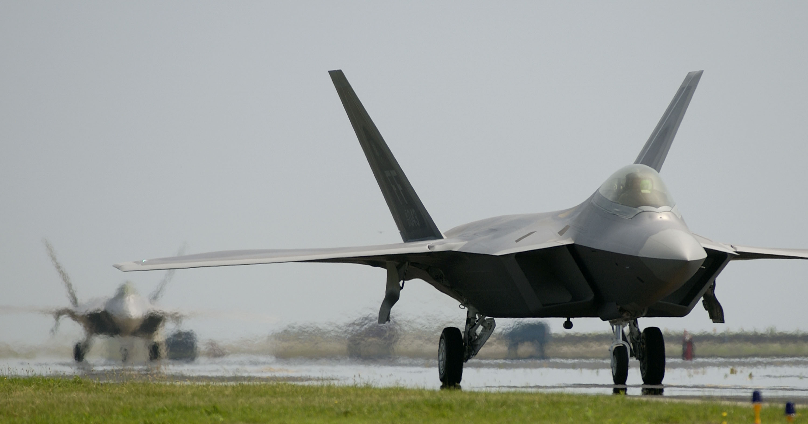

The F-22 Raptor is possibly the most aesthetically pleasing airplane to ever be developed. It is employed by the U.S. military in air-to-air combat, patrols, reconnaissance, and stealth attacks. It has strong anti-ground and electronic warfare capabilities, although it is primarily designated as an air-to-air fighter jet. Produced by Lockheed-Martin from the 1990s through the late 2000s, the Raptor experienced global air dominance due to other world powers’ air force development unable to advance to the point of contesting the F-22.
Ready for Takeoff
| Qualitative Value | Quantitative Value |
|---|---|
|
Length |
62 feet |
|
Height |
17 feet |
|
Wing span |
45 feet |
|
Horizontal tail span |
29 feet |
|
Wing area |
840 square feet |
|
Engine thrust |
35,000 pounds |
During its time, it was the most technically advanced aircraft used by a military force. It had unprecedented fighting capabilities because of superior aerodynamics and controllability, as well as complete situational awareness for the pilots, via advanced radar systems such as 360 degree infrared missile detection. Furthermore, the plane is virtually invisible, employing a coating of radar-absorbent material that deflects incoming detection waves.
The F-22 Raptor:
Due to the cost of production and the inability of competitors or rivals to compete with the plane, production halted in 2011 with only 187 Raptors presently utilized in specialized military service. Seemingly impossibly, a more versatile F-35 Lightning II has taken the stage as arguably the most deadly and technologically advanced plane in the world.
Questions? Feel free to ask in an email!
Quick reference for HTML codes used in this site:
Styles